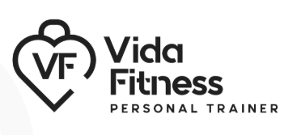
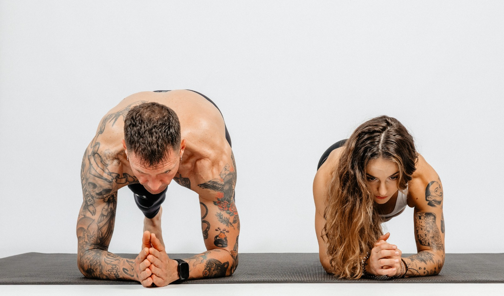
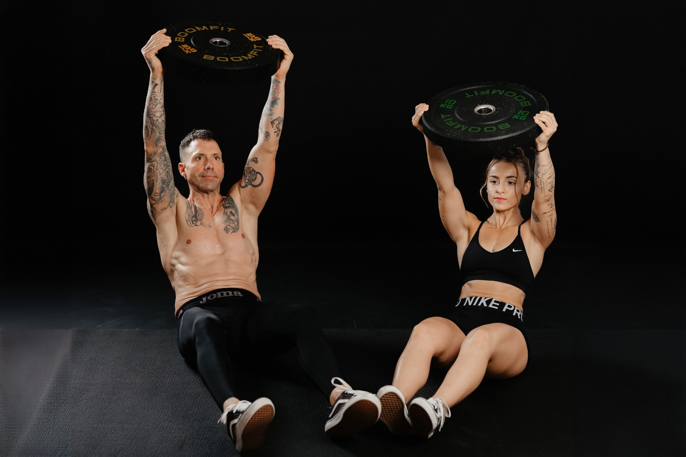
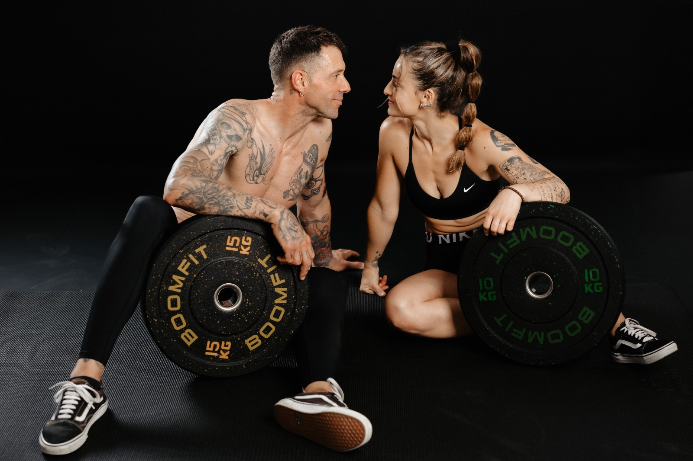
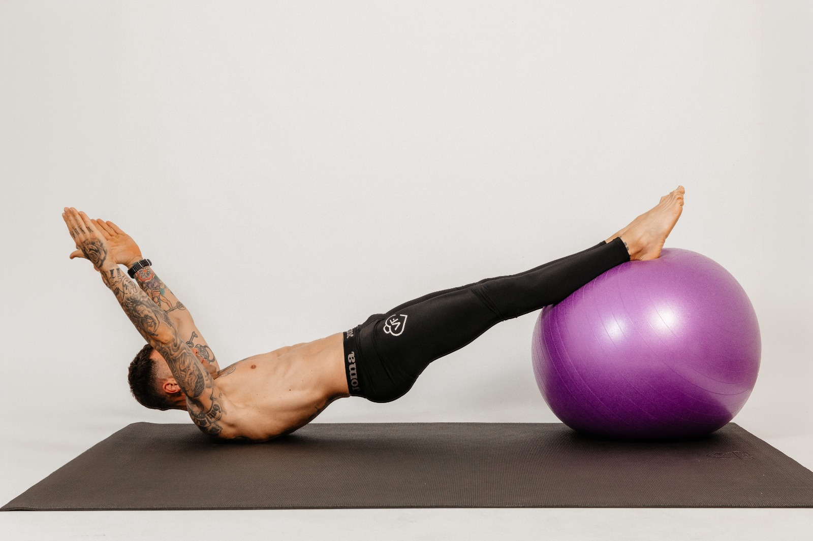
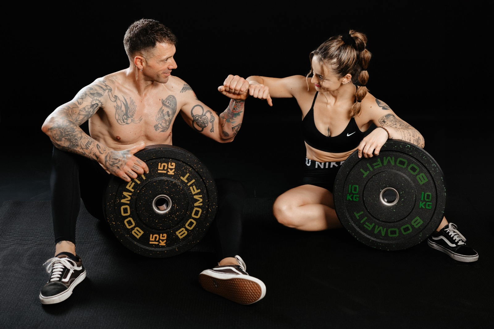
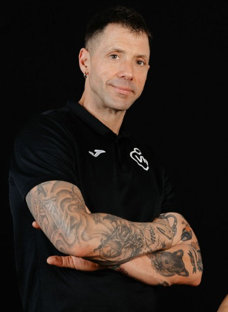
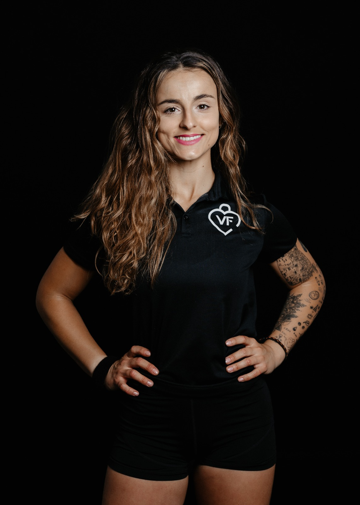

SAL DEL AUTOMÁTICO
SAL DEL
AUTOMÁTICO
5 días, 5 experimentos contigo.

Este cuaderno es de…
SAL DEL AUTOMÁTICO

Manifiesto
Vida Fitness
Antes de empezar,
conócenos.
Te invitamos a ver nuestro manifiesto y descubrir la mirada de Vida Fitness.
▶ VER EL MANIFIESTOPulsa aquí. El vídeo se abre en YouTube.Ahora sí. Vamos contigo. ↓
SAL DEL AUTOMÁTICO
Ven con curiosidad.
Aquí puedes tachar, hacer un garabato y cambiar de idea. No hay respuestas de diez: hay respuestas tuyas.
Un experimento al día. De 3 a 10 minutos, objetos de casa, papel, bolígrafo y móvil. Escribe aquí: se guarda solo en tu dispositivo. Tus fotos y audios son privados.
Adapta el movimiento a tu comodidad. Usa alimentos que puedas consumir. Respira a tu ritmo y para si aparece malestar.
SAL DEL AUTOMÁTICO

Tu casa esconde
un entrenamiento
Tres gestos cotidianos. Una sesión que sí cabe.
Sentarte, levantar una carga y llevarla de un sitio a otro: ya lo haces en tu día. Hoy vas a convertirlo en una pequeña sesión de fuerza.
- Prepara tu material: coloca una silla sin ruedas contra la pared. Cierra una mochila con una carga ligera y fácil de manejar, como una toalla.
- Prueba una vuelta: siéntate y levántate 5 veces; de pie, sujeta la mochila con ambas manos y acércala al pecho 5 veces; después camina con ella cerca del cuerpo durante 20 segundos.
- Repite a tu ritmo durante 4 minutos. Descansa cuando lo necesites. Puedes usar las manos al levantarte y hacer los movimientos sin mochila. No busques cansarte al máximo.
Al terminar, deja preparada tu mochila junto a la silla: tu próxima sesión ya tiene lugar y material. Adapta los movimientos a tu comodidad y para si aparece dolor o malestar.
SAL DEL AUTOMÁTICO
prisas.
Rescate
de nevera
Antes de comprar más, descubre qué puedes resolver.
Hoy el reto es resolver una comida con alimentos que ya tienes. Vas a dejarle una decisión menos pendiente a tu yo de mañana.
- Encuentra un alimento que convenga utilizar pronto. Revisa nevera, despensa o congelador. Usa solo alimentos en buen estado y respeta sus condiciones de conservación.
- Búscale dos aliados: una fuente de proteína y una verdura, o una base como pan, arroz o patata, según lo que ya hayas elegido. Adáptalo a lo que puedes comer.
- Decide cómo lo combinarás. No hace falta cocinar ahora. Escribe qué vas a preparar, para qué comida y si necesitas descongelar o dejar algo listo con antelación.
Tienes un calabacín que conviene usar: lo combinas con huevo y pan para preparar mañana un revuelto. Si falta algún ingrediente, busca primero una alternativa que ya tengas.
SAL DEL AUTOMÁTICO

Dibuja tu
respiración
Un paisaje que solo puedes dibujar tú.
- Apoya el papel y ponte cómodo. Mantén los ojos abiertos. Deja que tu respiración siga su ritmo habitual.
- Dibuja durante un minuto: cuando notes que entra el aire, lleva la línea hacia arriba; cuando sale, hacia abajo. Avanza por el papel como si dibujaras colinas.
- Observa el resultado y ponle un título. No hay una forma ideal. No interpretes el dibujo como una prueba de salud.
No cambies, profundices ni retengas la respiración. Si observarla te incomoda, dibuja una línea siguiendo los sonidos que escuchas.
SAL DEL AUTOMÁTICO

Tu museo
de hoy
Tres objetos. Una pequeña historia sobre ti.
- Mira a tu alrededor. Elige tres objetos que representen cómo estás hoy. No busques objetos especiales: una taza, una llave o una prenda también pueden contar algo.
- Crea tu exposición. Colócalos juntos, si puedes moverlos. Si estás al aire libre, obsérvalos sin recoger ni alterar nada. La foto es opcional.
- Ponle título. Después escribe por qué has elegido cada objeto. No tienes que enseñar tu exposición a nadie.
Una taza vacía, unas llaves y una manta. Título: «De un lado a otro, buscando una pausa». Lo importante es lo que significan para ti.
SAL DEL AUTOMÁTICO
bien.
Cámbiate
el mensaje
Tu voz también puede acompañarte.
- Elige una frase cotidiana y leve que te dices cuando algo no sale como esperabas. Por ejemplo: «Ya he vuelto a dejarlo a medias».
- Imagina que te lo dice alguien a quien quieres. ¿Qué le responderías con respeto, sin quitarle importancia a lo que siente?
- Grábate respondiendo durante 30 segundos. Escucha el audio y guarda una frase que te gustaría recordar. Si no quieres grabarte, escribe tu respuesta.
«Hoy no te ha salido como querías. Puedes ajustar lo que te habías propuesto y volver a probar. Un día no cuenta toda la historia».
Tu audio es privado: no sale de tu dispositivo. Elige una situación sencilla y salta el ejercicio si te remueve.
SAL DEL AUTOMÁTICO
¿Y tú, qué te llevas?
Puede ser una idea, una sorpresa o algo que te apetezca repetir. No hace falta una gran conclusión.
Una última cosa…
Si quieres compartir tu descubrimiento, escríbenos EXPERIMENTO por Instagram a @vida.fitness017. Nos encantará leerte y orientarte si quieres empezar con nosotros.
ESCRIBIR «EXPERIMENTO»Abre un mensaje directo en Instagram.SAL DEL AUTOMÁTICO
Nos vemos en
Espai Vida.


Movimiento, naturaleza y personas.
Nos gusta que cuidarte también tenga espacio para jugar, explorar y compartir. Gracias por dejarnos acompañarte estos cinco días.